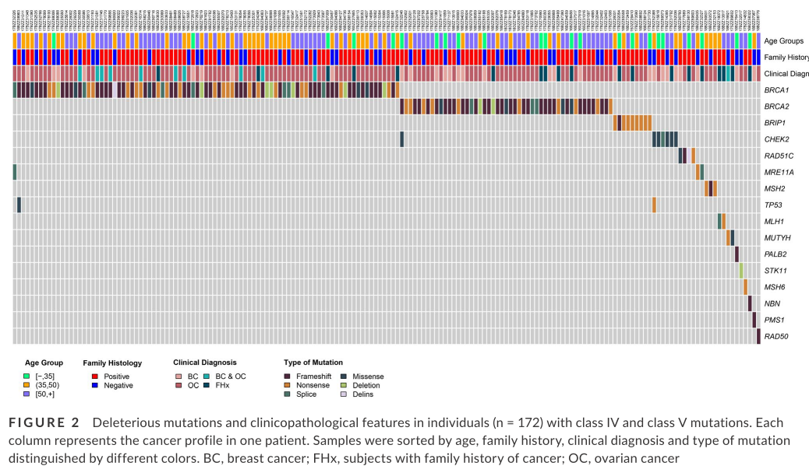
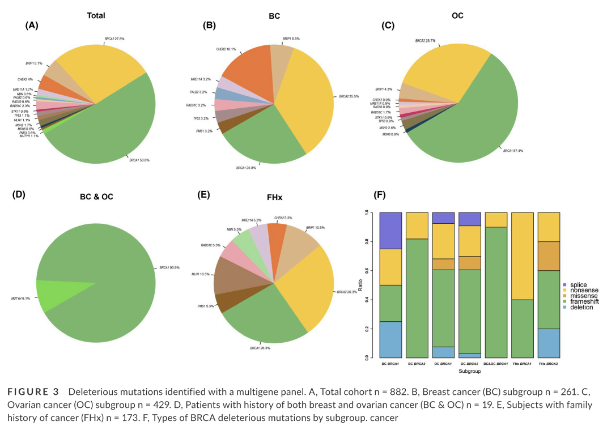
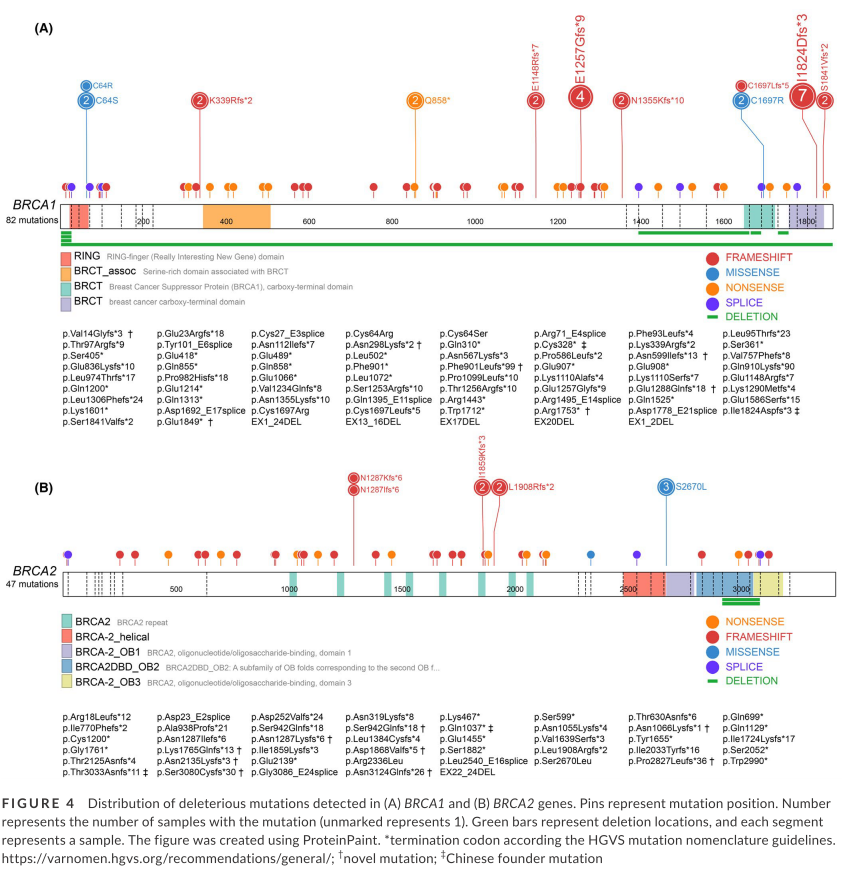

Prevalence of hereditary breast and ovarian cancer (HBOC) predisposition gene mutations among 882 HBOC high-risk Chinese individuals
November 19, 2019
Abstract
background
Identification of deleterious variants in hereditary breast and ovarian cancer (HBOC) susceptibility genes allows for increased clinical surveillance and early detection, and could predict the response to poly (ADP-ribose) polymerase (PARP) inhibitor in patients with advanced ovarian carcinomas.
methods
To determine the prevalence and clinical prediction fac- tors for HBOC syndrome, 882 selected individuals underwent multigene panel testing for HBOC risk assessment during the period from January 2015 to March 2018.
results
Overall, 176 deleterious mutations were observed in 19.50% (n = 172) of individuals. Twenty-six of 176 mutations could not be retrieved in related public databases and were considered to be novel. Among patients with ovarian cancer, 115 deleterious mutations were identified in 429 patients (48.6%) with significant enrichment for a family history of breast or ovarian cancer syndrome (P < .05). In the breast cancer subgroup, 31 deleterious mutations were identified in 261 patients. Besides BRCA1 (8; 25.8%) and BRCA2 (11; 35.5%), the most frequently occurring genes, an additional 12 deleterious mutations (38.7%) were found in seven other susceptibility genes. Higher mutation incidence (57.9%) was observed in subjects with histories of breast and ovarian cancer.
conclusion
Our results highlighted the genetic heter- ogeneity of HBOC and the efficiency of a multigene panel in carrying out risk assessment.



- Posted on:
- November 19, 2019
- Length:
- 2 minute read, 247 words
- Categories:
- BRCA1, BRCA2, HRR gene, HBOC,
- Tags:
- HBOC
- See Also: